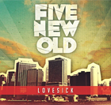

『LOVESICK』 / FIVE NEW OLD
|
 |
|
|---|---|
| （品番OVTV-0001） | |
実際、Cash CashやThe Cabの来日ツアーサポートも務めており、2010年結成とは思えない、海外のバンドと比べても見劣りしないクオリティの高さに舌を巻く。 収録曲の『Victim Of Love』はDEMO音源として先行配布されていた80'sディスコサウンドを彷彿とさせるキラーチューン。
初めて彼らのライブを目にした折に「あ、これは物販寄らずには帰れないな」と強く思わされたのはこの1曲の影響が非常に強い。 他の収録曲とやや一線を画すこの1曲がEPのちょうど真ん中に置かれているのは構成の妙を感じた。
海外のバンドの影響を色濃く受けながらも安易に迎合するのではなく、洋楽の持つ魅力を日本人の感性でしっかりとアウトプットしているのが特に気に入ったところ。
伸びしろ十分。また1つ、良いバンドさんに出会うことができた。
(review by SMYLE)